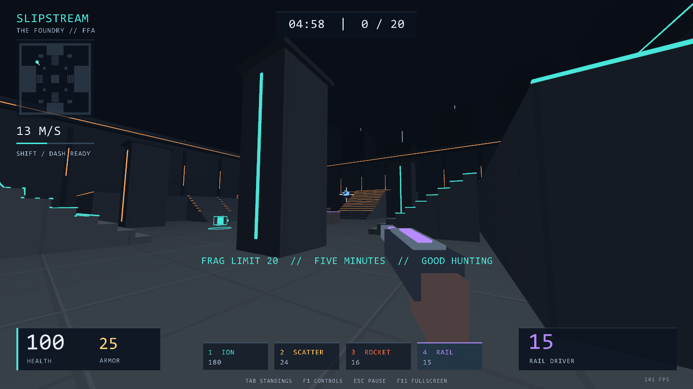

Prelude — Begin with the finished work 25 min
From a finished arena to your first line
Read, predict, run, change. Make that cycle your method for learning.

24 chapters · 8 laboratories · 2 languages · the complete FPS source
The work you are learning to make
SLIPSTREAM is a Windows arena FPS with three-dimensional movement, wall kicks, and bot opponents. Its implementation is the subject of this book. The goal is not to memorize its code. You should be able to explain how input becomes velocity, velocity becomes position, and a hit becomes a score; then change that behavior and verify the result.
The teaching project is an original, small arena FPS. It does not port Quake III’s engine, maps, or models, and it does not include network multiplayer or a full character animation system. Knowing that boundary helps you distinguish an improvement to this implementation from a feature that needs a new design.
Three layers, three responsibilities
Common Lisp is the language. SBCL runs and compiles programs written in it. raylib handles the window, GPU drawing, input, and audio. The game’s rules, physics, collision, weapons, bots, and match progression live in Lisp; native/bridge.c exposes raylib through simple arguments. Implementing a GPU library in Lisp is not the goal.
The book introduces prerequisites in order. Chapters 1–7 teach Lisp notation and data. Chapters 8–12 build time, rendering, and movement. Chapters 13–18 complete combat and bots. The final five chapters cover macros, verification, performance, and modifications. Mathematics is introduced through diagrams and numbers when you need it.
A repeatable learning loop
First read an example and predict its result before running it. Execute the chapter’s workshop script in SBCL and compare. Write your own exercise solution and run it at least once before revealing the answer. Finally open “Inside the implementation” to see where the same concept appears in the real game.
Download or clone the repository first. The game is in game/, workshops in workshop/, and the textbook in public/. Run each chapter’s command from the repository root. Completion marks are stored only in this browser; no account or server submission is involved. Reading times are estimates. The time needed for practice varies considerably.
git clone https://github.com/dikmri/slipstream-lisp-textbook.git
cd slipstream-lisp-textbook
sbcl --script workshop/00-orientation.lispVerify with SBCL
Run from the downloaded repository root. After PASS, change one value or condition and compare with your prediction.
sbcl --script workshop/00-orientation.lispEXERCISE 00
Write it with your own hands
Write an input → movement → collision → shooting → rendering chain and assign a source file to each stage.
A hint
Separate main.lisp, arena.lisp, view.lisp, and platform.lisp by responsibility.
Solution & reasoning
; Input: main.lisp / platform.lisp
; Movement, collision, shooting: arena.lisp
; Presentation: view.lisp
; OS / GPU / audio boundary: native/bridge.cWhat matters is the boundary a change crosses. Changing shot damage does not require changing the GPU layer.
Inside the implementation
These excerpts come directly from the included FPS. Compare a chapter’s short example with the boundaries in the implementation.
main.lispmainL45 ↗
Read this location on GitHub ↗
(defun main ()
(let* ((args (cdr sb-ext:*posix-argv*))
(smoke (member "--smoke-test" args :test #'string=))
(demo (member "--demo" args :test #'string=))
(root (make-pathname :name nil :type nil :defaults sb-ext:*runtime-pathname*))
(dll (merge-pathnames "arena.dll" root))
(accumulator 0.0f0) (frames 0) (total-frame-time 0.0))
(when (member "--self-test" args :test #'string=) (self-test) (return-from main 0))
(unless (probe-file dll) (setf dll (merge-pathnames "dist/Slipstream/arena.dll" *default-pathname-defaults*)))
(handler-case
(handler-bind ((error (lambda (e)
(with-open-file (s (merge-pathnames "crash.log" root) :direction :output :if-exists :supersede)
(format s "SLIPSTREAM error: ~A~%" e)
(sb-debug:print-backtrace :stream s :count 35)))))
(progn
(sb-alien:load-shared-object (namestring dll))
(ss-init 1440 810) (setf *native-ready* t *state* :menu *exit-request* nil *help* nil *menu-time* 0)
(unless smoke (load-settings))
(setf *actors* nil *player* nil *rockets* nil *effects* nil *time* 0)
(make-arena)
(when demo (start-match) (setf (actor-bot *player*) t) (ss-capture 0))
(unwind-protect
(loop until (or *exit-request* (plusp (ss-quit))) do
(let ((dt (min 0.1 (ss-dt))))
(incf frames) (incf total-frame-time dt) (incf *menu-time* dt)
(ss-input)
(when (pressed 300) (ss-fullscreen))
(when (pressed 290)
(setf *help* (not *help*))
(when (eq *state* :playing) (setf *state* :paused) (ss-capture 0)))
(when (pressed 256)
(cond (*help* (setf *help* nil))
((eq *state* :playing) (setf *state* :paused) (ss-capture 0))
((eq *state* :paused) (setf *state* :playing) (ss-capture 1))
((eq *state* :menu) (setf *exit-request* t))
(t (setf *state* :menu))))
(when (and (eq *state* :playing) (zerop (ss-focus)) (not smoke) (not demo))
(setf *state* :paused) (ss-capture 0))
(when (member *state* '(:menu :paused)) (menu-input))
(when smoke
(case frames
(35 (ss-shot "artifacts/menu.png"))
(40 (start-match) (setf (actor-bot *player*) t) (ss-capture 0))
(190 (ss-shot "artifacts/gameplay.png"))
(245 (setf *state* :paused))
(250 (ss-shot "artifacts/pause.png"))
(255 (setf *state* :results))
(265 (ss-shot "artifacts/results.png"))
(270 (setf *exit-request* t))))
(when (eq *state* :playing)
(multiple-value-bind (wish fire jump) (if (or smoke demo) (values (v 0 0 0) nil nil) (player-input dt))
(incf accumulator dt)
(loop while (and (>= accumulator +tick+) (eq *state* :playing)) do
(tick-game +tick+ wish fire jump) (decf accumulator +tick+))))
(unless (eq *state* :playing) (setf accumulator 0.0f0))
(render-frame)))
(ss-capture 0) (unless smoke (save-settings))
(when smoke
(with-open-file (s "artifacts/render-check.sexp" :direction :output :if-exists :supersede)
(write (list :frames frames :average-fps (/ frames (max total-frame-time 0.01))
:audio-ready (ss-audio) :bots (length *actors*)
:frags (mapcar (lambda (a) (list (actor-name a) (actor-frags a))) *actors*)) :stream s)))
(ss-close) (setf *native-ready* nil))))
(error (e)
(declare (ignore e))
(when *native-ready* (ss-capture 0) (ss-close))
(sb-ext:exit :code 1)))
(sb-ext:exit :code 0)))arena.lispstart-matchL287 ↗
Read this location on GitHub ↗
(defun start-match ()
(setf *time* 0.0f0 *match-left* 300.0f0 *feed* nil *rockets* nil *effects* nil
*damage-flash* 0 *hit-flash* 0 *kick-flash* 0)
(make-arena)
(setf *player* (make-actor :name "YOU" :color #x4AE5DAFF :pos (v 0 0 0))
*actors* (list *player*))
(dotimes (i *bot-count*)
(setf *actors* (append *actors* (list (make-actor :name (aref *bot-names* i) :color (aref *bot-colors* i) :bot t :pos (v 0 0 0))))))
(dolist (a *actors*) (spawn-actor a))
(setf *state* :playing)
(when *native-ready* (ss-capture 1))
(notify (format nil "FRAG LIMIT ~D // FIVE MINUTES // GOOD HUNTING" *frag-limit*) 3))